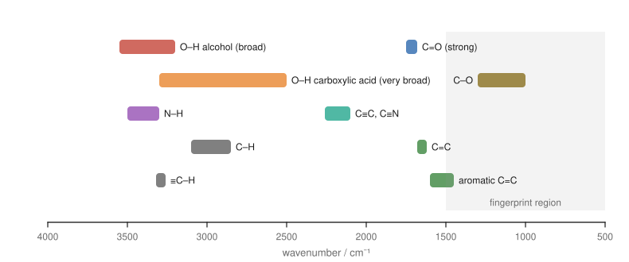
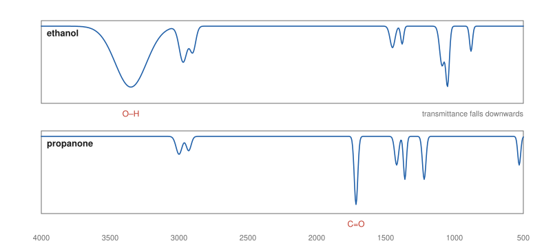
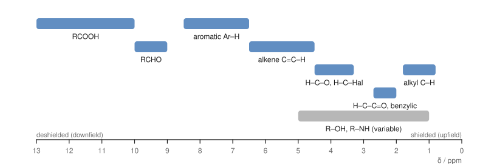
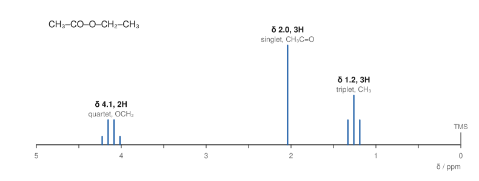
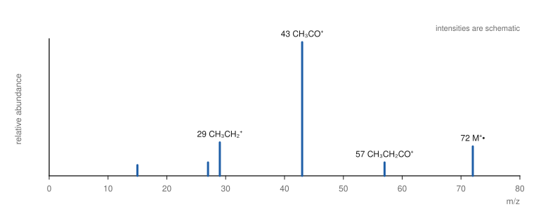

Chapter 14: Spectroscopy: IR, NMR and Mass Spectrometry¶
How chemists find out what they have made
Until the middle of the twentieth century, working out the structure of an unknown compound could take years of chemical tests, degradations and syntheses. Today a few milligrams of sample and an hour of instrument time usually suffice. Three techniques do most of the work. Infrared spectroscopy identifies functional groups. Nuclear magnetic resonance (NMR) spectroscopy maps the carbon–hydrogen framework. Mass spectrometry gives the molar mass and clues from the way the molecule breaks apart. This chapter explains what each technique measures, how to read the spectra, and how to combine the evidence to solve a structure.
Learning outcomes
By the end of this chapter you should be able to:
- relate the energy, frequency, wavelength and wavenumber of electromagnetic radiation;
- explain why bonds absorb infrared radiation at characteristic wavenumbers, and identify the main functional groups from an IR spectrum;
- predict the number of signals in ¹H and ¹³C NMR spectra from molecular symmetry;
- use chemical shift, integration and splitting (the n + 1 rule) to interpret ¹H NMR spectra;
- identify the molecular ion in a mass spectrum, use isotope patterns for chlorine and bromine, and explain common fragment ions;
- combine the molecular formula, degree of unsaturation and spectra to deduce the structure of a simple unknown.
14.1 Light and molecules¶
Spectroscopy studies how matter absorbs or emits electromagnetic radiation. Radiation can be described by its wavelength λ, its frequency ν (with \(c = \lambda\nu\)), or its wavenumber \(\tilde{\nu} = 1/\lambda\), usually given in cm⁻¹. The energy of one photon is
where \(h\) is Planck's constant. Molecules can absorb a photon only if its energy matches the gap between two of their energy levels. Different regions of the spectrum probe different kinds of motion:
| Region | Typical wavelength | What it excites | Technique |
|---|---|---|---|
| radio waves | metres | nuclear spin in a magnetic field | NMR |
| infrared | 2.5 to 25 μm (4000 to 400 cm⁻¹) | bond vibrations | IR spectroscopy |
| ultraviolet and visible | 200 to 800 nm | electrons in π systems | UV–visible spectroscopy |
Table 14.1. Regions of the electromagnetic spectrum used in organic chemistry.
Mass spectrometry is not, strictly, spectroscopy: it does not involve absorption of light but separates ions by their mass. It is always used alongside the spectroscopic methods.
14.2 Infrared spectroscopy¶
Why bonds absorb infrared light¶
Chemical bonds are not rigid. They stretch and bend, like springs joining balls, at frequencies in the infrared range. A bond absorbs infrared radiation of the same frequency as its vibration, provided that the vibration changes the dipole moment of the molecule. The frequency depends on two things, as for a spring:
where \(k\) is the force constant (the stiffness of the bond) and \(\mu\) the reduced mass of the two atoms. So:
- Stronger bonds vibrate faster. C≡C (about 2150 cm⁻¹) > C=C (about 1650 cm⁻¹) > C–C (about 1200 cm⁻¹).
- Bonds to light atoms vibrate faster. C–H, O–H and N–H stretches all appear at high wavenumbers, between 2850 and 3600 cm⁻¹.
An IR spectrum plots the percentage of light transmitted against wavenumber, decreasing from left to right; absorptions appear as dips ("bands" or "peaks") pointing down.

Reading an IR spectrum¶
Focus on the region above 1500 cm⁻¹ and ask a few questions in turn:
- Is there a strong band at 1680 to 1750 cm⁻¹? That is a C=O stretch, usually the strongest band in the spectrum. Within this range, esters (about 1735 to 1750) tend to be higher than aldehydes (about 1725) and ketones (about 1715), and amides lower (about 1650 to 1690). Conjugation with a C=C or a benzene ring lowers the wavenumber by about 20 to 30 cm⁻¹.
- Is there a broad band at 3200 to 3550 cm⁻¹? That is an O–H stretch of an alcohol or phenol, broadened by hydrogen bonding. A carboxylic acid O–H is even broader, spreading from about 2500 to 3300 cm⁻¹ and overlapping the C–H bands, together with a C=O band.
- Are there one or two sharper bands at 3300 to 3500 cm⁻¹? That is N–H: primary amines and amides (NH₂) show two bands, secondary ones (NH) one.
- Where are the C–H stretches? Below 3000 cm⁻¹ means sp³ C–H (alkyl); just above 3000 means sp² C–H (alkene or arene); a sharp band near 3300 means a terminal alkyne ≡C–H.
- Is there a band at 2100 to 2260 cm⁻¹? C≡N (sharp, about 2250) or C≡C.
| Bond | Wavenumber (cm⁻¹) | Appearance |
|---|---|---|
| O–H (alcohol, phenol) | 3200–3550 | strong, broad |
| O–H (carboxylic acid) | 2500–3300 | very broad |
| N–H (amine, amide) | 3300–3500 | medium, sharper; NH₂ gives two bands |
| C–H (sp³) | 2850–2960 | medium to strong |
| C–H (sp²) | 3000–3100 | medium |
| ≡C–H (sp) | about 3300 | strong, sharp |
| C≡N | about 2250 | medium, sharp |
| C≡C | 2100–2260 | weak to medium |
| C=O | 1680–1750 | strong, sharp |
| C=C (alkene) | 1620–1680 | variable |
| C=C (aromatic ring) | about 1450–1600 | several bands |
| C–O | 1000–1300 | strong |
Table 14.2. Characteristic infrared absorptions.

The fingerprint region below 1500 cm⁻¹ contains many overlapping bands from bending vibrations and C–C and C–O stretches. It is hard to interpret band by band, but it is unique to each compound: if the spectrum of an unknown matches that of a known compound exactly in this region, the two are the same.
Example 14.1: Using IR to follow a reaction
A student oxidises propan-2-ol to propanone. How would IR spectroscopy show that the reaction is complete?
The starting alcohol has a broad O–H band at about 3300 cm⁻¹ and no C=O band. The product ketone has a strong C=O band at about 1715 cm⁻¹ and no O–H band. The reaction is complete when the O–H band has disappeared and the C=O band is present.
14.3 NMR spectroscopy: principles¶
Some atomic nuclei, including ¹H and ¹³C (but not ¹²C or ¹⁶O), behave like tiny magnets because they have a property called nuclear spin. In a strong external magnetic field, such a nucleus can line up with the field (lower energy) or against it (higher energy). Radio waves of exactly the right frequency make it flip from the lower to the higher state: the nucleus is in resonance. An NMR spectrometer places the sample, dissolved in a solvent without ordinary hydrogen (usually CDCl₃, deuterochloroform), in a powerful magnet and measures the frequencies at which the nuclei absorb.
Chemical shift¶
If every hydrogen absorbed at the same frequency, NMR would be useless. It is useful because the electrons around each nucleus shield it slightly from the external field. A nucleus surrounded by more electron density feels a smaller field and resonates at a lower frequency (it is shielded, or upfield); a nucleus near electronegative atoms has less electron density around it, feels more of the field and resonates at a higher frequency (it is deshielded, or downfield).
The position of a signal is reported as its chemical shift, δ, in parts per million (ppm) relative to a reference compound, tetramethylsilane, (CH₃)₄Si (TMS), which is set at δ = 0. Using ppm makes δ independent of the strength of the magnet. Most ¹H signals fall between 0 and 13 ppm.

Two effects explain the chart. Electronegative atoms pull electron density away and deshield nearby hydrogens, and the effect falls off with distance: in 1-bromopropane, the CH₂ next to Br is at about 3.4 ppm, the middle CH₂ at about 1.9 and the CH₃ at about 1.0. π electrons circulating in the applied field create local fields that strongly deshield hydrogens on alkenes, on aromatic rings (the ring current) and on aldehyde carbonyl carbons.
14.4 Reading a ¹H NMR spectrum¶
A ¹H NMR spectrum gives four pieces of information.
1. The number of signals: equivalent hydrogens¶
Hydrogens in identical chemical environments (related by the symmetry of the molecule or by fast rotation) are chemically equivalent and give a single signal. To count the environments, imagine replacing each hydrogen in turn by another group: hydrogens that give the same compound are equivalent.
- Ethane, CH₃CH₃: all six H are equivalent: one signal.
- Propane, CH₃CH₂CH₃: the six CH₃ hydrogens are equivalent, the two CH₂ hydrogens another set: two signals.
- Ethyl ethanoate, CH₃COOCH₂CH₃: three signals (CH₃CO, OCH₂ and the CH₃ of the ethyl group).
- Methylbenzene: the CH₃ gives one signal; the aromatic hydrogens fall into ortho, meta and para sets that often overlap near 7.2 ppm.
2. The chemical shift: what kind of hydrogen¶
The position of each signal tells you its environment (Figure 14.3).
3. The integration: how many hydrogens¶
The area under each signal is proportional to the number of hydrogens producing it. The instrument prints an integral trace or values; these give the ratio of hydrogens, which must be scaled to the molecular formula. Ethyl ethanoate gives integrals in the ratio 2 : 3 : 3.
4. The splitting: how many neighbours¶
Hydrogens on adjacent carbons interact through the bonding electrons (spin–spin coupling), and their signals split into several lines. For hydrogens with \(n\) equivalent neighbouring hydrogens (usually on the next carbon, three bonds away), the signal is split into n + 1 lines: the n + 1 rule.
| Neighbouring H (n) | Lines (n + 1) | Name | Relative intensities |
|---|---|---|---|
| 0 | 1 | singlet (s) | 1 |
| 1 | 2 | doublet (d) | 1 : 1 |
| 2 | 3 | triplet (t) | 1 : 2 : 1 |
| 3 | 4 | quartet (q) | 1 : 3 : 3 : 1 |
| 4 | 5 | quintet | 1 : 4 : 6 : 4 : 1 |
| 6 | 7 | septet | 1 : 6 : 15 : 20 : 15 : 6 : 1 |
Table 14.3. Splitting patterns from the n + 1 rule. The intensities follow Pascal's triangle.
The spacing between the lines, the coupling constant \(J\), is measured in hertz (about 7 Hz for neighbouring hydrogens on freely rotating sp³ carbons). Two groups that are coupled to each other show the same \(J\), which helps match them up. Equivalent hydrogens do not split each other, and hydrogens on O and N usually appear as broad singlets because they exchange rapidly between molecules.

Key idea
A quartet (2H) and a triplet (3H) with the same coupling constant mean an ethyl group, CH₃CH₂–. A septet (1H) and a doublet (6H) mean an isopropyl group, (CH₃)₂CH–. A singlet (9H) near 1 ppm means a tert-butyl group. Learning to spot these patterns speeds up every problem.
Example 14.2: Ethyl ethanoate or methyl propanoate?
Two isomeric esters, C₄H₈O₂, are ethyl ethanoate (CH₃COOCH₂CH₃) and methyl propanoate (CH₃CH₂COOCH₃). One gives signals at δ 3.7 (s, 3H), 2.3 (q, 2H), 1.1 (t, 3H). Which is it?
Both have an ethyl group (quartet + triplet) and a methyl singlet. The difference is where the groups are attached. In this spectrum the singlet is at 3.7 ppm, typical of CH₃ on oxygen, and the quartet at 2.3 ppm, typical of CH₂ next to C=O. So the methyl is on oxygen and the ethyl on the carbonyl: methyl propanoate. (Ethyl ethanoate has the reverse: a singlet at 2.0 and a quartet at 4.1.)
Identifying O–H and N–H signals¶
Because O–H and N–H hydrogens exchange with deuterium, adding a drop of D₂O to the sample and shaking replaces them with D, which does not appear in a ¹H spectrum. The signal that disappears is the O–H or N–H.
14.5 ¹³C NMR spectroscopy¶
Only about 1.1% of carbon atoms are ¹³C, the isotope with nuclear spin, so ¹³C spectra are weaker and take longer to record. They are normally run with proton decoupling, which removes the splitting by hydrogens, so each kind of carbon gives a single line. Two pieces of information are used:
- The number of signals equals the number of different carbon environments. Propan-1-ol gives three signals; propan-2-ol, which is symmetrical, gives two. Benzene gives one; methylbenzene gives five (CH₃ and four kinds of ring carbon).
- The chemical shift, which spans about 0 to 220 ppm: sp³ carbons at about 0 to 50 ppm (higher, about 50 to 90 ppm, when bonded to O or N), alkene and aromatic carbons at about 100 to 150 ppm, and carbonyl carbons at about 160 to 220 ppm (esters, acids and amides about 160 to 185; aldehydes and ketones about 190 to 220).
Peak areas in routine ¹³C spectra are not reliably proportional to the number of carbons, so integration is not used.
14.6 Mass spectrometry¶
In the commonest method, electron ionisation, the vaporised sample is bombarded with high-energy electrons, which knock an electron out of each molecule to give a radical cation, the molecular ion, M⁺•:
The ions are accelerated and separated according to their mass-to-charge ratio, m/z. Since nearly all ions carry a single charge, m/z is the mass of the ion. The mass spectrum plots the relative abundance of each ion against m/z, with the most abundant ion (the base peak) set to 100.
The molecular ion¶
The peak of highest m/z (ignoring small isotope peaks) is usually the molecular ion, and it gives the relative molecular mass. With high-resolution instruments, masses are measured to four or more decimal places, which is enough to decide the molecular formula: CO, N₂ and C₂H₄ all have nominal mass 28, but their exact masses differ in the third decimal place.
Isotope peaks¶
Elements with more than one common isotope give characteristic patterns:
- Carbon: about 1.1% of carbon is ¹³C, so a molecule with \(n\) carbons shows a small M + 1 peak about \(1.1n\)% the height of M.
- Chlorine: ³⁵Cl and ³⁷Cl occur in a ratio of about 3 : 1, so a compound with one chlorine shows peaks at M and M + 2 in the ratio 3 : 1.
- Bromine: ⁷⁹Br and ⁸¹Br are nearly equal in abundance, so one bromine gives M and M + 2 of nearly equal height.
The nitrogen rule is a further check: a compound containing C, H, O and an odd number of nitrogen atoms has an odd molecular mass; with no nitrogen (or an even number), the mass is even.
Fragmentation¶
The molecular ion has excess energy and often breaks into a cation and a neutral radical. Only the charged fragment is detected. Bonds break preferentially where they give stable cations:
- next to a carbonyl group, giving a resonance-stabilised acylium ion, R–C≡O⁺;
- at branch points, giving more substituted carbocations;
- at a benzylic position (C₆H₅CH₂⁺, m/z 91, is common in compounds with a benzyl group).
Differences between peaks correspond to the neutral pieces lost: 15 (CH₃), 29 (C₂H₅ or CHO), 18 (H₂O, typical of alcohols), 28 (CO or C₂H₄).

14.7 UV–visible spectroscopy in brief¶
Molecules with conjugated π systems absorb ultraviolet or visible light, which promotes a π electron to a higher, empty orbital. The more extended the conjugation, the smaller the energy gap and the longer the wavelength absorbed. Ethene absorbs at about 170 nm in the far ultraviolet; buta-1,3-diene at about 217 nm. A molecule with a long chain of alternating double bonds, such as β-carotene (eleven conjugated C=C bonds), absorbs blue light in the visible region and appears orange. Azo dyes (Section 13.5) owe their colours to the same effect. UV–visible spectroscopy is used mainly to measure concentrations (via the Beer–Lambert law) and to study conjugated systems.
14.8 Solving structures: putting it together¶
A systematic approach works best:
- Molecular formula (from mass spectrometry or analysis). Calculate the degree of unsaturation (Section 2.6).
- IR: which functional groups are present, and which are absent?
- ¹³C NMR: how many carbon environments? Is there a C=O, aromatic or alkene carbon?
- ¹H NMR: how many kinds of H; how many of each (integration); what environments (shift); which groups are neighbours (splitting)?
- Assemble fragments, and check that the proposed structure accounts for every signal and for the formula.
Example 14.3: An unknown ketone
Compound X, C₄H₈O, shows a strong IR band at 1715 cm⁻¹ and no band above 3100 cm⁻¹ except C–H. Its ¹H NMR spectrum has δ 2.45 (q, 2H), 2.14 (s, 3H), 1.06 (t, 3H). The mass spectrum shows peaks at m/z 72, 57, 43 and 29. Identify X.
Formula: DBE = (8 + 2 − 8)/2 = 1, one ring or π bond.
IR: 1715 cm⁻¹ is a C=O (ketone or aldehyde); no O–H. The π bond is the C=O.
¹H NMR: a quartet (2H) and triplet (3H) form an ethyl group; the CH₂ at 2.45 ppm is next to C=O. A singlet (3H) at 2.14 is a CH₃ next to C=O with no neighbouring H. No signal at 9 to 10 ppm, so not an aldehyde.
Structure: CH₃–CO–CH₂CH₃, butanone. The mass spectrum agrees: M⁺ at 72 and acylium ions at 43 (CH₃CO⁺) and 57 (C₂H₅CO⁺) (Figure 14.5).
14.9 Summary¶
Summary
- \(E = h\nu = hc/\lambda\). IR excites bond vibrations; NMR flips nuclear spins in a magnetic field; UV–visible excites π electrons.
- IR: stronger bonds and lighter atoms absorb at higher wavenumber. Key bands: O–H 3200–3550 (broad), acid O–H 2500–3300, N–H 3300–3500, C=O 1680–1750 (strong), C≡N about 2250.
- ¹H NMR: number of signals = number of environments; chemical shift = environment (δ relative to TMS); integration = relative number of H; splitting = n + 1 lines for n neighbouring H.
- ¹³C NMR: one line per carbon environment (proton-decoupled), δ 0 to 220; C=O 160 to 220.
- Mass spectrometry: M⁺• gives the molar mass; Cl gives M : M+2 = 3 : 1, Br gives 1 : 1; fragments form stable cations such as acylium ions.
- Solve structures by combining the formula, DBE, IR, ¹³C and ¹H NMR, and MS, and check every signal.
14.10 Exercises¶
Exercise 1
How would you distinguish by IR spectroscopy alone between: (a) cyclohexanol and cyclohexanone; (b) propanoic acid and propan-1-ol; (c) hex-1-yne and hex-2-yne?
Answer
(a) Cyclohexanol shows a broad O–H band near 3300 cm⁻¹ and no C=O; cyclohexanone shows a strong C=O near 1715 cm⁻¹ and no O–H. (b) Propanoic acid shows a very broad O–H from about 2500 to 3300 cm⁻¹ and a C=O near 1710 cm⁻¹; propan-1-ol shows a narrower O–H near 3300 cm⁻¹ and no C=O. (c) Hex-1-yne, a terminal alkyne, shows a sharp ≡C–H stretch near 3300 cm⁻¹ and a C≡C band near 2100 cm⁻¹; hex-2-yne has no ≡C–H, and its C≡C band is weak or absent because the nearly symmetrical bond hardly changes the dipole moment as it vibrates.
Exercise 2
How many signals would you expect in the ¹H NMR spectrum and in the ¹³C NMR spectrum of: (a) propanone; (b) butanone; (c) 1,4-dimethylbenzene; (d) 2-methylpropan-2-ol?
Answer
(a) ¹H: 1 (six equivalent H); ¹³C: 2 (CH₃ and C=O). (b) ¹H: 3; ¹³C: 4. (c) ¹H: 2 (CH₃ and the four equivalent ring H); ¹³C: 3 (CH₃, the two ring carbons bearing CH₃, and the four ring CH carbons). (d) ¹H: 2 (nine CH₃ H and the OH); ¹³C: 2 (CH₃ and the central carbon).
Exercise 3
Predict the ¹H NMR spectrum (shift, integration, splitting) of 1-chloropropane, CH₃CH₂CH₂Cl.
Answer
Three signals: CH₂Cl at about 3.5 ppm (2H, triplet, two neighbours on the middle CH₂); middle CH₂ at about 1.8 ppm (2H, a sextet, five neighbours, 3 + 2, if the coupling constants are similar); CH₃ at about 1.0 ppm (3H, triplet).
Exercise 4
A compound C₃H₇Br has a ¹H NMR spectrum with a doublet at δ 1.7 (6H) and a septet at δ 4.2 (1H). Its mass spectrum shows two peaks of equal height at m/z 122 and 124. Identify it.
Answer
The two molecular ion peaks of equal height, two mass units apart, show one bromine atom. A doublet (6H) and a septet (1H) indicate an isopropyl group, (CH₃)₂CH–; the CH at 4.2 ppm is deshielded by the attached Br. The compound is 2-bromopropane, (CH₃)₂CHBr. (C₃H₇⁷⁹Br = 122, C₃H₇⁸¹Br = 124.)
Exercise 5
A compound has a molecular ion at m/z 78 and an M + 2 peak at m/z 80 one-third as high. Its ¹H NMR spectrum shows a doublet (6H) and a septet (1H). Suggest a structure.
Answer
An M : M + 2 ratio of 3 : 1 indicates one chlorine. Subtracting ³⁵Cl (35) from 78 leaves 43, which is C₃H₇. The isopropyl pattern (doublet 6H, septet 1H) gives 2-chloropropane, (CH₃)₂CHCl.
Exercise 6
Compound Y, C₈H₈O, has IR bands at 3060 cm⁻¹ and 1690 cm⁻¹. Its ¹H NMR spectrum shows δ 7.4 to 8.0 (m, 5H) and 2.6 (s, 3H). Identify Y and explain the C=O wavenumber.
Answer
DBE = (16 + 2 − 8)/2 = 5: a benzene ring (4) plus one C=O. The 5H multiplet at 7.4 to 8.0 is a monosubstituted benzene ring (C₆H₅–); the band at 3060 cm⁻¹ is aromatic C–H. The singlet (3H) at 2.6 is a CH₃ next to C=O. Y is 1-phenylethanone (acetophenone), C₆H₅COCH₃. The C=O band (1690 cm⁻¹) is lower than for a simple ketone (1715) because the carbonyl is conjugated with the benzene ring, which lowers its bond order slightly.
Exercise 7
An alcohol C₄H₁₀O shows only two signals in its ¹H NMR spectrum: a singlet at δ 1.3 (9H) and a broad singlet at δ 2.0 (1H) that disappears on shaking with D₂O. Its ¹³C NMR spectrum has two lines. Identify it.
Answer
The 9H singlet is a tert-butyl group; the 1H broad singlet that exchanges with D₂O is the OH. Two carbon environments fit (CH₃)₃C–OH: 2-methylpropan-2-ol.
14.11 Quiz¶
Check your understanding of spectroscopy
Exercise 1
A strong, sharp IR band at about 1715 cm⁻¹ indicates
- an O-H group
- a C=O group
- a C≡N group
- an aromatic ring
Answer
a C=O group
Exercise 2
In ¹H NMR, the area under a signal tells you
- the number of neighbouring H
- the relative number of H producing it
- the type of carbon
- the molar mass
Answer
the relative number of H producing it
Exercise 3
A CH₂ group next to a CH₃ group (and no other H neighbours) appears as a
- singlet
- doublet
- triplet
- quartet
Answer
quartet
Exercise 4
How many signals are there in the ¹³C NMR spectrum of propan-2-ol?
Answer
2 / two
Exercise 5
A mass spectrum shows M and M + 2 peaks of nearly equal height. The compound contains
- one chlorine atom
- one bromine atom
- one nitrogen atom
- one sulfur atom
Answer
one bromine atom
Exercise 6
TMS is used in NMR as
- the solvent
- the reference with δ = 0
- a source of deuterium
- a catalyst
Answer
the reference with δ = 0
Exercise 7
Which ¹H chemical shift is typical of an aldehyde CHO hydrogen?
- 1.0 ppm
- 3.5 ppm
- 7.3 ppm
- 9.7 ppm
Answer
9.7 ppm